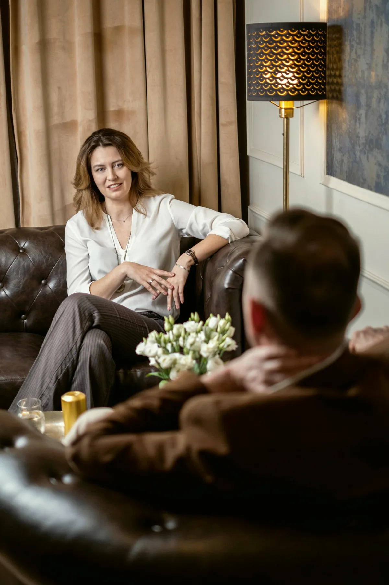

Életvezetési coaching
Pályaváltás, költözés, egy régóta halogatott döntés, életszakasz-váltás. Amikor nem baj van, hanem irány hiányzik.
27 szakemberAmivel küzd
Szorongás, pánik Hangulat, depresszió Kiégés, stressz Gyász, veszteség Párkapcsolati válság Kamasz otthon Függőség Önismeret, életvezetésAmit kínálunk
Felnőtt egyéni terápia Pár- és családterápia Gyermek és serdülő Csoportterápiák Coaching Pszichiátriai szakrendelés Sportpszichológia Cégeknek
Életvezetési, üzleti és párkapcsolati coaching. Nem diagnózisból indulunk, hanem abból, amit Ön másképp szeretne: egy döntés, egy szerep, egy váltás.
Ugyanaz a módszer: cél, keret, lépések. Más az élethelyzet. A szám azt mutatja, hány szakemberünk dolgozik az adott területen.
Pályaváltás, költözés, egy régóta halogatott döntés, életszakasz-váltás. Amikor nem baj van, hanem irány hiányzik.
27 szakemberÚj vezetői szerep, delegálás, konfliktus a csapatban, döntés egy cégről vagy egy karrierlépésről. Céges keretben is, erről a Cégeknek oldal szól.
18 szakemberKét ember, egy közös kérdés: hogyan döntsünk, hogyan osszuk meg, hogyan beszéljünk úgy, hogy hallja a másik. Ha a kapcsolat krízisben van, a párterápia a jó út.
23 szakemberHa nem tudja, melyik: az első beszélgetés ezt is eldönti. Ha terápia kell, házon belül van kihez továbbmenni, és nem kezdi elölről a történetét.

Mit szeretne, hogy más legyen? Az első alkalom erről szól: a célt olyan pontosan fogalmazzuk meg, hogy később el lehessen dönteni, elértük-e.
Utána a coach kérdez, strukturál és visszajelez, Ön pedig két alkalom között kipróbál valamit. A coaching nem helyettesíti a pszichoterápiát, és nem orvosi ellátás. Ha a beszélgetésben kiderül, hogy másra van szükség, ezt kimondjuk.
Coachaink között klinikai és tanácsadó szakpszichológusok is dolgoznak, egy szakmai vezetés alatt, ugyanabban a házban, ahol a terápiák folynak.